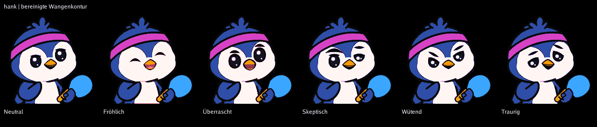

Ursache: erste schwarze Fläche der Gruppe body; Rest der ursprünglich mit dem Kopf verschmolzenen Schlägerkontur oberhalb der alten Schnittkante bei y=220. Bereinigt ab y=212; Schläger, Griff, Flosse, Gesichter und Emblem unverändert.

Griff Blau auf Blaugrau bleibt als kritische Kombination dokumentiert und wird nicht automatisch umgefärbt.